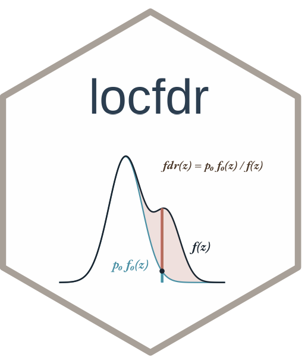

Simulated Data for locfdr
lfdrsim.RdA simulated dataset that involves 2000 "genes", each of which has yielded a test statistic "zex", with \(zex[i] \sim N(mu[i], 1)\) (independently for \(i = 1, 2, \ldots, 2000\)). Of the 2000 \(\mu_i\) values, 1800 (90%) are zero (null cases) and the remaining 200 (10%) are drawn from a \(N(3, 1)\) distribution (non-null cases).